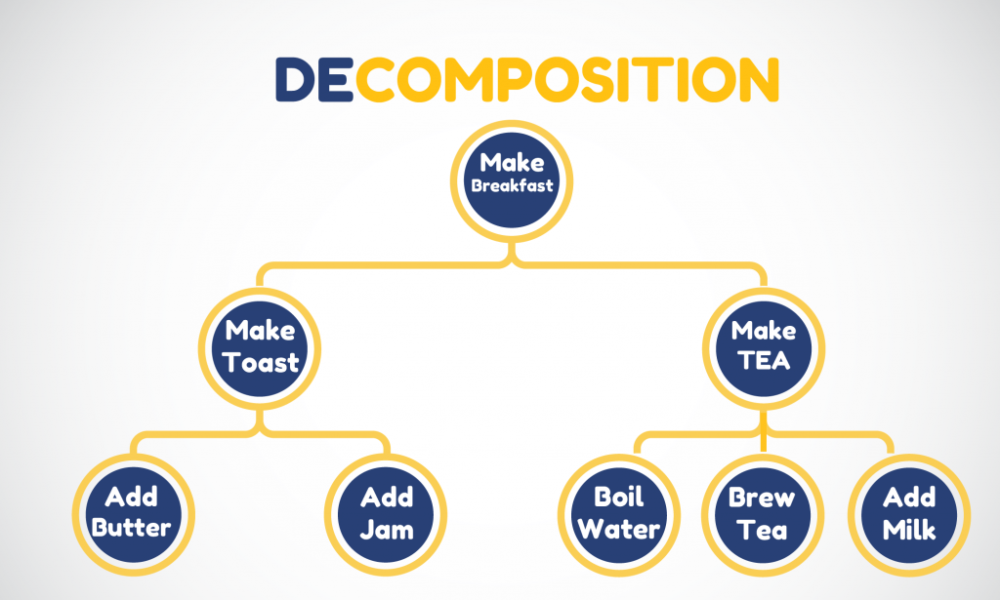

These lesson topics are more abstract then the previous lessons so lets go through what computational thinking is before the lesson truly starts
Computational thinking (CT) is a problem-solving technique that imitates the process computer programmers go through when writing computer programmes and algorithms. This process requires programmers to break down complex problems and scenarios into bite size pieces that can be fully understood in order to then develop solutions that are clear to both computers and humans. So, like programmers, those who apply computational thinking techniques will break down problems into smaller, simpler fragments, and then outline solutions to address each problem in terms that any person can comprehend.
computational thinking is an effective tool that can help students and learners develop problem-solving strategies they can apply to both their studies as well as everyday life. In an increasingly complicated, digital world, computational thinking concepts can help people tackle a diverse array of challenges in an effective, manageable way. Because of this, it is increasingly being taught outside of a computer science education, from the United Kingdom’s national curriculum to the United States’ K-12 education system.
• exploring and analysing problems thoroughly in order to fully understand them
• using precise and detailed language to outline both problems and solutions
• applying clear reasoning at every stage of the process
With all this being said lets now start with the 3 main components of computational thinking beginning with decomposition
Decomposition in computational thinking is the process of breaking down a problem into a number of smaller problems that can more easily be addressed. It is considered to be an effective method of solving complex problems as it helps to identify patterns, eliminate extraneous details and solve the problem step by step instead of trying to do so all at once.
Decomposition in computational thinking is the process of breaking down a problem into a number of smaller problems that can more easily be addressed. It is considered to be an effective method of solving complex problems as it helps to identify patterns, eliminate extraneous details and solve the problem step by step instead of trying to do so all at once.
Decomposition is a useful tool in daily life as it helps break down problems into simpler step by step instead of trying to do so all at once letting the brain not be as taxed otherwise